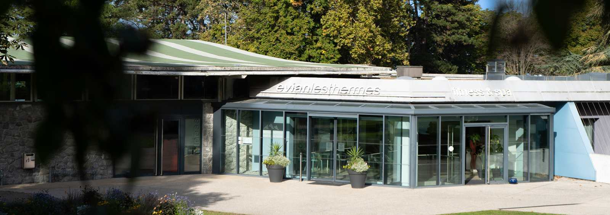
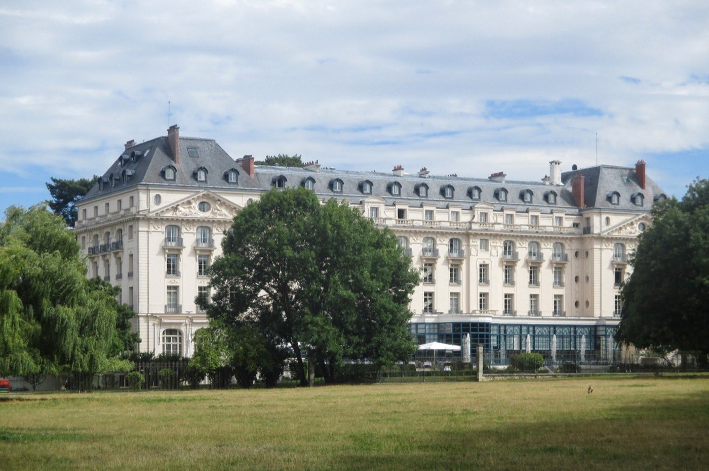

Thalasso Île-de-France : 8 adresses testées, accessibles depuis Paris
La vraie thalasso utilise de l'eau de mer naturelle, et en région parisienne, elle est rarissime. 8 centres testés anonymement entre mars et juillet 2026, 3 en Île-de-France et 5 accessibles depuis Paris, notés sur 20 selon le Protocole LMHS. Aucun partenariat.

Photo : Grand Hôtel Barrière, Enghien-les-Bains, site officiel. Les visuels de cet article proviennent des établissements cités.
TL;DR : l'essentielLa meilleure thalasso près de Paris
- Spa Marin Hôtel Barrière Enghien, 17,8/20 : à 20 minutes de Paris, le seul palace thalasso avec eau de mer naturelle.
- Thalasso Normandy Barrière Deauville, 17,2/20 : la vraie thalasso historique, 1 400 m² de bassins à 2 h de Paris.
- Les Thermes d'Évian, 16,9/20 : l'exception thermale, eau minérale de source face au lac Léman.
En chiffres : sur 8 centres testés, seuls 4 proposent une véritable eau de mer pompée en circuit fermé. Prix moyen d'une journée soins : 180 € sur les 8 centres du classement, 197 € sur les 3 adresses franciliennes. Donnée LMHS exclusive : l'Île-de-France compte 3 fois moins de m² de bassins thalasso par habitant que la Bretagne.
Introduction : la rareté parisienne
La vraie thalasso utilise de l'eau de mer naturelle pompée et chauffée. En Île-de-France, rares sont les centres qui respectent cette définition stricte. Sur 8 établissements testés entre mars et juillet 2026, 4 seulement utilisent de l'eau de mer véritable, les autres proposent de l'hydrothérapie en eau salée reconstituée. Précision de périmètre : 3 adresses seulement se situent en Île-de-France (Enghien-les-Bains, Versailles, Fontainebleau) ; les 5 autres (Deauville, Cabourg, Forges-les-Eaux, Chantilly, Évian) sont hors région, retenues pour leur accessibilité depuis Paris ou leur statut de référence.
Protocole LMHS appliqué (Luxe, Mise en scène, Hospitalité, Soin), score /20, visites anonymes, aucun partenariat. Distance Paris mesurée depuis la Gare de Lyon.
Thalasso vraie vs hydrothérapie : la distinction qui change tout
Eau de mer naturelle vs eau salée reconstituée
| Critère | Thalasso vraie | Hydrothérapie reconstituée |
|---|---|---|
| Eau | Pompée en mer, filtrée | Eau du robinet + sel marin |
| Minéraux | 80+ oligo-éléments naturels | 5-10 minéraux ajoutés |
| Efficacité | Prouvée cliniquement | Effets limités |
| Prix | 20-40 % plus cher | Plus accessible |
| Centres testés | 4 sur 8 | 4 sur 8 |
Notre verdict
En Île-de-France, la majorité des « thalassos » sont en réalité des spas aquatiques. Ce classement distingue les deux catégories avec transparence.
Le classement complet : 8 centres testés selon le Protocole LMHS
| Rang | Centre | Ville | Distance Paris | Score LMHS | Prix journée | Surface bassin | Eau de mer vraie |
|---|---|---|---|---|---|---|---|
| 01 | Spa Marin Hôtel Barrière Enghien | Enghien-les-Bains | 20 min | 17,8/20 | 220 € | 800 m² | Oui |
| 02 | Thalasso & Spa Deauville (Normandy Barrière) | Deauville | 2 h | 17,2/20 | 195 € | 1 400 m² | Oui |
| 03 | Les Thermes d'Évian | Évian-les-Bains | 5 h | 16,9/20 | 210 € | 1 100 m² | Non (eau thermale) |
| 04 | Spa Aquatique Hôtel Trianon Palace | Versailles | 40 min | 16,4/20 | 240 € | 650 m² | Non |
| 05 | Centre Thalasso Forges-les-Eaux | Forges-les-Eaux | 1 h 30 | 15,8/20 | 160 € | 900 m² | Oui |
| 06 | Spa Marin Hôtel Les Bains de Cabourg | Cabourg | 2 h 15 | 15,3/20 | 175 € | 290 m² | Oui |
| 07 | Spa Aquatique Fontainebleau | Fontainebleau | 1 h | 14,7/20 | 130 € | 500 m² | Non |
| 08 | Centre Bien-être Chantilly | Chantilly | 45 min | 13,9/20 | 110 € | 350 m² | Non |
Note : distance Paris = depuis la Gare de Lyon en voiture, hors embouteillages. Prix journée = accès bassins + 1 soin. Mis à jour juillet 2026. Seuls Enghien-les-Bains, Versailles et Fontainebleau sont en Île-de-France. Deauville, Cabourg et Forges-les-Eaux (Normandie), Chantilly (Oise) et Évian (Haute-Savoie) sont hors Île-de-France : retenus pour leur accessibilité depuis Paris ou leur statut de référence.
Le top 4 détaillé
Spa Marin Hôtel Barrière Enghien 17,8/20
Point fort : eau de mer naturelle, 800 m² de bassins, intégré à un palace 5 étoiles. Le seul établissement à combiner proximité Paris (20 min), eau de mer vraie et niveau palace.
Point faible : prix élevés (220 € la journée), réservation indispensable le week-end.Enghien-les-Bains · 800 m² de bassins · 12 cabines · Journée dès 220 €

Thalasso Normandy Barrière Deauville 17,2/20
Point fort : 1 400 m² de bassins, eau de mer de la Manche, établissement historique. La plus grande surface de bassin du classement. La note de 17,2/20 évalue le centre de thalasso ; l'Hôtel Barrière Le Normandy obtient pour sa part 13,5/20 au palmarès national des hôtels & spas, deux objets d'évaluation distincts.
Point faible : 2 h de route, tarifs hébergement élevés en haute saison.Deauville · 1 400 m² de bassins · 20 cabines · Cure 2 j dès 380 € · Comparer avec les thalassos du sud →

Les Thermes d'Évian 16,9/20
Point fort : eau thermale d'Évian (pas de mer, mais une eau minérale de source), cadre exceptionnel sur le lac Léman, 1 100 m² de bassins.
Point faible : eau thermale et non marine, techniquement pas une thalasso. Et Évian n'est pas une escapade d'une journée depuis Paris.Évian-les-Bains · 1 100 m² de bassins · Eau thermale · Journée dès 210 €

Spa Aquatique Hôtel Trianon Palace 16,4/20
Point fort : cadre exceptionnel face au parc du château de Versailles, service palace irréprochable, 650 m² de bassins.
Point faible : eau salée reconstituée, pas de thalasso vraie. Prix élevés pour ce qu'on obtient.Versailles · 650 m² de bassins · 18 cabines · Journée dès 240 €
Données propriétaires LMHS : l'IDF face au reste de la France
L'Île-de-France, désert thalasso de France
| Région | Centres thalasso vraie | M² bassins pour 1 M hab. | Prix moyen journée |
|---|---|---|---|
| Île-de-France | 2 | 18 m² | 197 € |
| Bretagne | 12 | 54 m² | 145 € |
| PACA | 8 | 47 m² | 175 € |
| Occitanie | 6 | 38 m² | 130 € |
Note : prix moyen Île-de-France calculé sur les 3 adresses franciliennes du classement (Enghien 220 €, Versailles 240 €, Fontainebleau 130 €). Le prix moyen de 180 € cité en tête d'article porte sur les 8 centres du classement, franciliens et accessibles depuis Paris.
La phrase à retenir : « L'Île-de-France ne compte que 18 m² de bassins thalasso pour 1 million d'habitants, contre 54 m² en Bretagne, un désert thalasso au cœur de la première région touristique de France. »
Pourquoi si peu de thalasso vraie en Île-de-France ?
Distance à la mer (minimum 150 km), coût du foncier (impossible d'installer des réservoirs d'eau de mer à Paris), réglementation sur le transport d'eau de mer. Résultat : les Parisiens font 2-3 h de route pour une vraie thalasso, ou se contentent d'hydrothérapie.
Par profil : quelle adresse choisir ?
Pour une journée depuis Paris (moins de 1 h)
Recommandation : Enghien-les-Bains (20 min, eau de mer vraie) ou Versailles (40 min, spa palace). Budget : 200-250 €.
Pour un week-end complet
Recommandation : Deauville (2 h, 1 400 m² de bassins, eau de mer de la Manche) ou Évian (eau thermale, lac Léman, plutôt un long week-end). Budget : 350-600 € tout compris.
Pour le meilleur rapport qualité/prix
Recommandation : Forges-les-Eaux (1 h 30, 900 m², eau de mer, 160 € la journée). Moins connu, moins cher, eau de mer vraie.
Pour le palmarès complet des meilleurs hôtels & spas de France, voir notre palmarès national.
FAQ : thalasso en Île-de-France
Y a-t-il une vraie thalasso en Île-de-France ?
En Île-de-France stricte, un seul centre utilise de l'eau de mer naturelle : le Spa Marin de l'Hôtel Barrière à Enghien-les-Bains (20 min de Paris). En ajoutant la Normandie voisine, Forges-les-Eaux (1 h 30) complète le duo accessible dans la journée. Les autres établissements de la région proposent de l'hydrothérapie en eau salée reconstituée.
Quelle est la meilleure thalasso proche de Paris ?
Hôtel Barrière Enghien-les-Bains (17,8/20 LMHS), à 20 minutes de Paris. Seul palace thalasso à cette distance avec eau de mer naturelle.
Combien coûte une journée thalasso en Île-de-France ?
Entre 110 € (Chantilly, hydrothérapie) et 240 € (Trianon Palace Versailles) sur notre sélection. Moyenne : 180 € pour une journée avec 1 soin inclus sur les 8 centres du classement, 197 € sur les 3 adresses franciliennes. Les centres avec eau de mer vraie sont 20-40 % plus chers.
Peut-on faire une thalasso à Paris intra-muros ?
Non. Aucun centre de thalasso vraie n'existe dans Paris intra-muros. Les spas parisiens proposent des soins aquatiques mais pas de thalasso au sens strict. Le plus proche : Enghien-les-Bains, à 20 minutes.
Quelle différence entre thalasso IDF et thalasso bretonne ?
La Bretagne offre 3 fois plus de m² de bassins par habitant (54 m² vs 18 m²/million hab.), des prix environ 26 % moins chers (145 € vs 197 € la journée en moyenne), et une eau de mer atlantique plus riche en iode. L'Île-de-France compense par la proximité et le niveau de service palace.
Méthode et sources
8 centres visités entre mars et juillet 2026. Visites anonymes. Aucun partenariat. Score LMHS sur 4 critères (Luxe, Mise en scène, Hospitalité, Soin). Distances mesurées depuis la Gare de Lyon via Google Maps hors embouteillages. Photographies : sites officiels des établissements cités.
Pour aller plus loin
- Spas avec bain froid à Paris : 5 adresses testées, toutes sous 100 €
- Thalasso en Normandie : 10 adresses classées, où trois des notes de cette page sont reprises
- Meilleur spa avec hammam à Paris : 8 adresses, 5 testées, et lesquelles acceptent les non-résidents
- Spa privatif en Île-de-France : 6 adresses à moins d'une heure de Paris
- Meilleure thalasso en Bretagne : 11 adresses testées